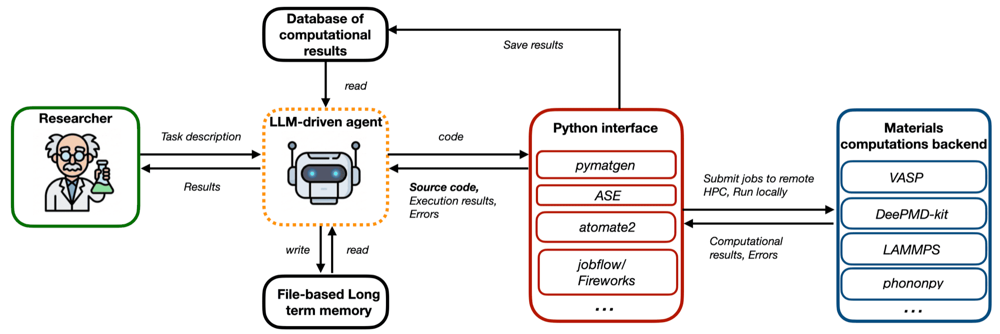
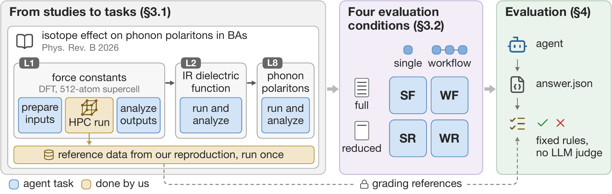
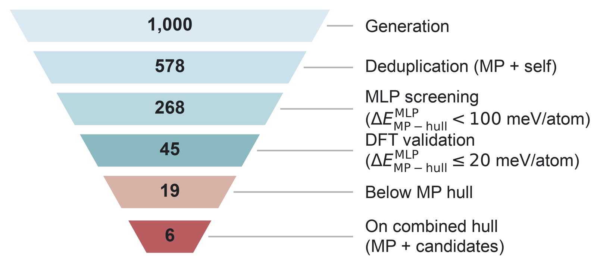
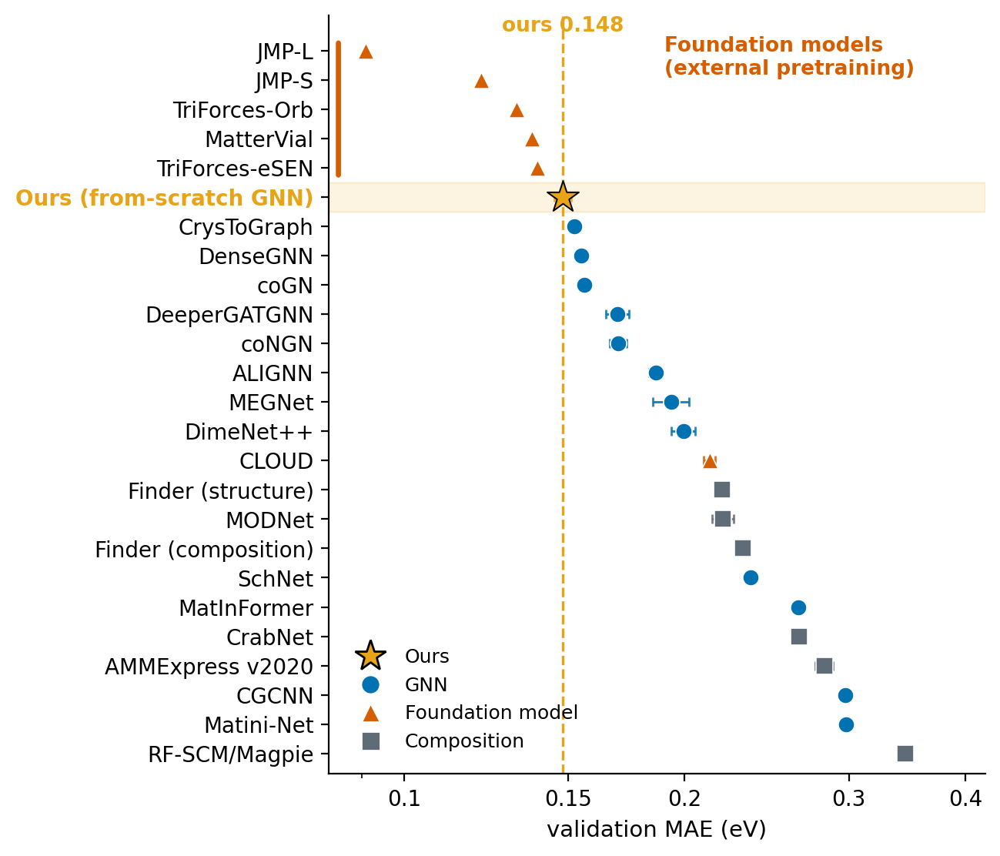

Postdoctoral Researcher in Materials Science, Rice University
MatClaw is an autonomous LLM agent for computational materials science. Given a task in plain language, it writes and runs Python against real domain libraries, submits jobs to supercomputers, and analyzes the results.
Coding agents live in a repository. MatClaw lives in a long-running Python session connected to a cluster, closer to a scientist at a notebook. Loaded models and running jobs stay in memory between steps, and its tools are whatever code it writes. The two projects below both build on it.

CompMat-Bench is a benchmark of 94 tasks from 15 recently published computational materials studies. The expensive simulations are run in advance, and answers are graded by fixed rules with no LLM judge.
With full guidance, agents pass 66 to 90% of single research steps. Long workflows with reduced guidance are much harder, and most failures are scientific errors: agents miss what an experienced researcher would notice.

Humans define the scientific tasks, and an autonomous LLM agent carries them out. We apply this workflow to Cu-In-Se, the system of the solar absorber CuInSe2.
The agent joins different methods in one workflow: structure generation with MatterGen, screening with machine-learning potentials, DFT with VASP, and phonon calculations with Phonopy. It writes the Python that connects them and runs the jobs on a supercomputer. From a single request, it completed the screening shown here with no further human input.

An LLM-agent research loop is set running: it repeatedly edits and trains a crystal graph neural network to predict band gaps. On the MatBench band-gap benchmark of over 100,000 crystals, the loop built the most accurate model trained without external pretraining (MAE = 0.148 eV), ahead of all 17 expert-designed band-gap models trained on the benchmark.
This shows that an AI agent can optimize an expert-designed ML model and push its accuracy further. Alongside this promise, I also examine the limitations of such loops and how to overcome them.

Before turning to AI, I spent years computing how electrons scatter in 2D semiconductors and nanoscale metals -- phonons, surfaces, defects, dielectric environments.